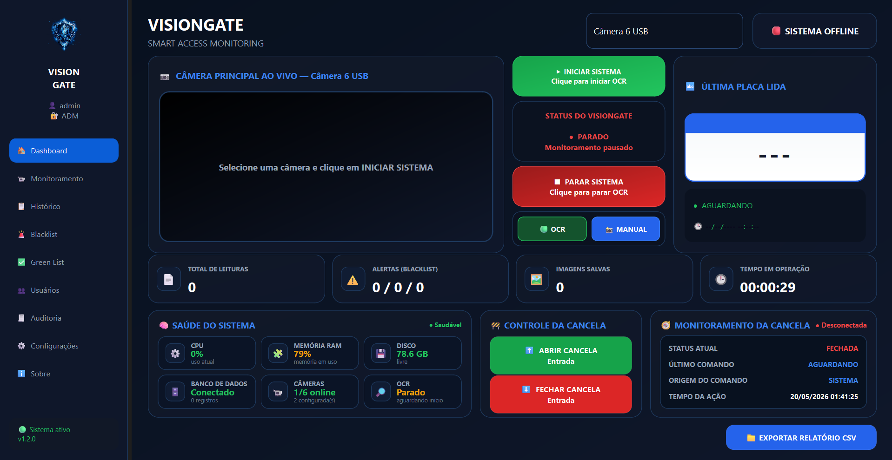
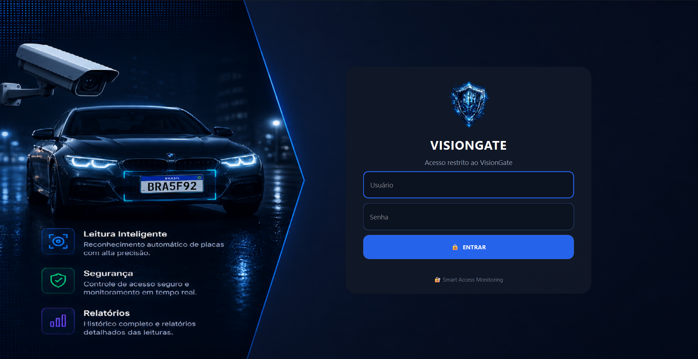
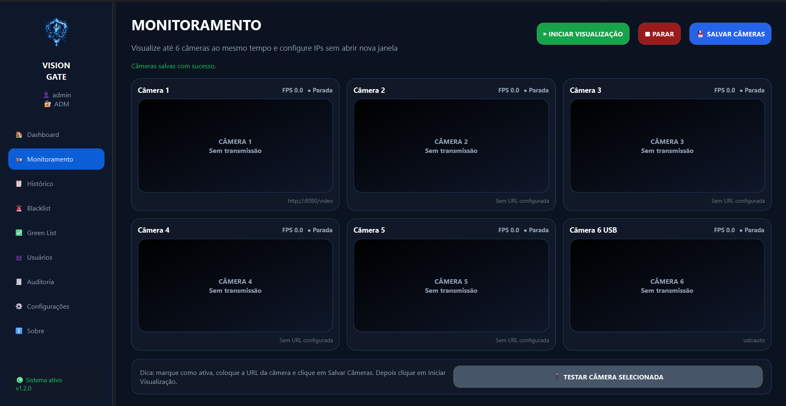
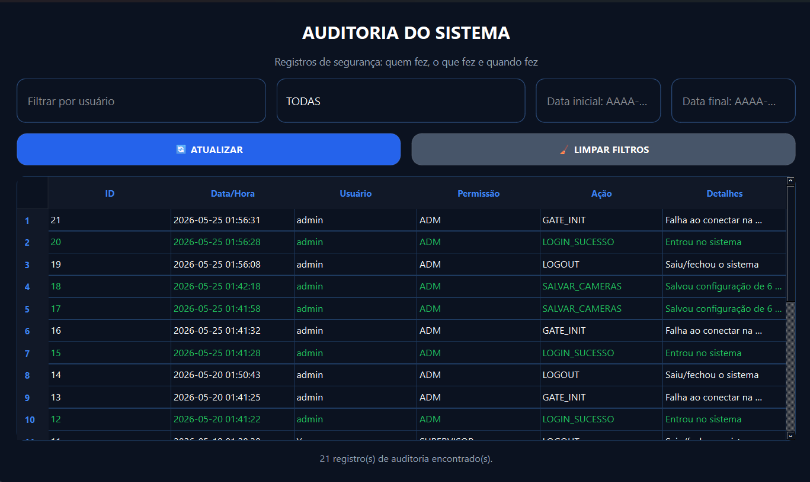
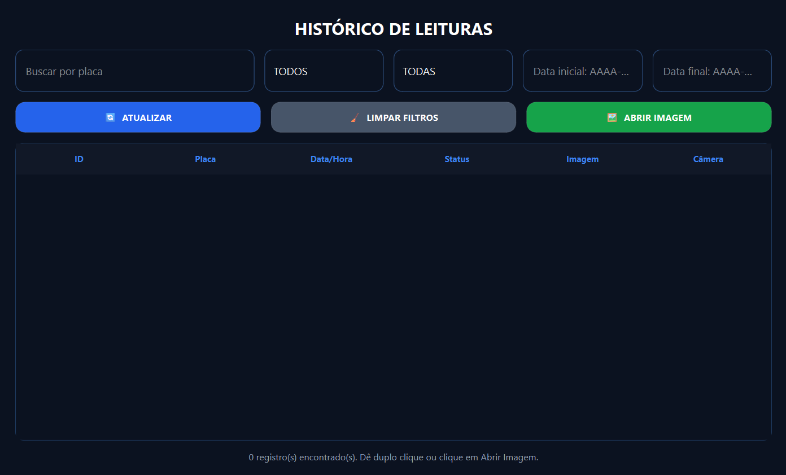
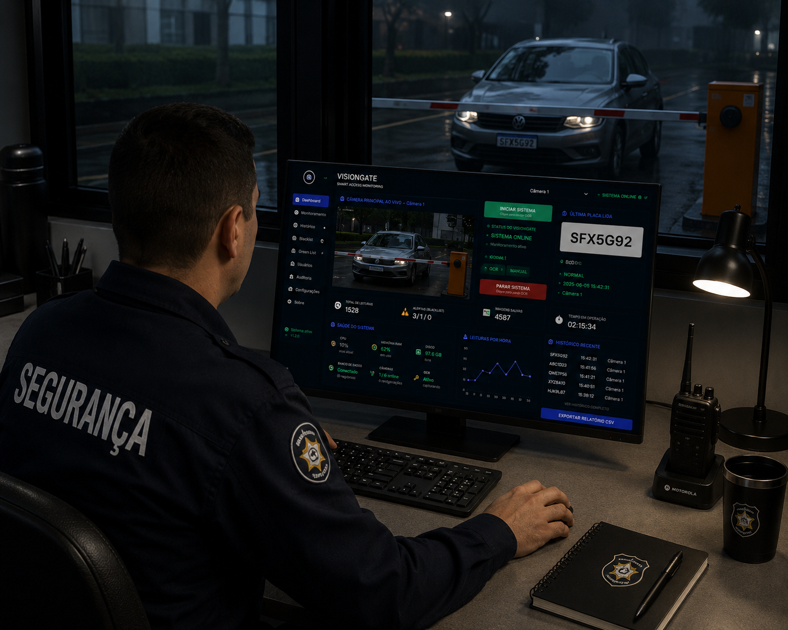

Seletor de câmera
Permite escolher qual câmera será usada no monitoramento, como câmera USB, IP ou outra fonte configurada.
- Seleciona a origem de vídeo
- Facilita testes e troca de câmera
- Prepara o OCR para a fonte correta
SMART ACCESS MONITORING
Esta página apresenta o funcionamento completo do VisionGate: tela de login, dashboard principal, barra lateral, monitoramento, histórico, listas de acesso, saúde do sistema, controle de cancela e exportação de relatórios.

O sistema foi organizado para que o operador consiga acessar, monitorar, registrar, consultar e controlar a operação de forma simples.
A tela de login é a primeira camada de acesso ao VisionGate. Ela impede que pessoas não autorizadas entrem no sistema e separa a operação por usuário, permitindo uma estrutura mais segura para portarias, empresas e ambientes controlados.

A dashboard concentra tudo que o operador precisa acompanhar: câmera, OCR, última placa lida, alertas, status do sistema, banco de dados, cancela e relatórios.
A tela foi criada para operação em tempo real. O operador seleciona a câmera, inicia o OCR, acompanha a última placa identificada e verifica se há alertas ou falhas no sistema.
O módulo de monitoramento do VisionGate foi desenvolvido para oferecer supervisão visual contínua, integração operacional e acompanhamento inteligente em ambientes corporativos e portarias.


A auditoria do VisionGate oferece rastreabilidade completa das operações, registrando ações, acessos e alterações realizadas pelos usuários em tempo real.
O VisionGate mantém um histórico inteligente das leituras realizadas, armazenando informações importantes para auditoria, segurança e controle operacional.

Permite escolher qual câmera será usada no monitoramento, como câmera USB, IP ou outra fonte configurada.
Mostra se o sistema está parado, ativo, aguardando ou com alguma condição operacional importante.
Permite alternar entre leitura automática por OCR e operação manual, útil quando a placa precisa ser registrada manualmente.
Conta quantas placas foram lidas durante a operação, ajudando a medir o volume de acessos monitorados.
Exibe alertas relacionados a placas restritas, suspeitas ou bloqueadas cadastradas na blacklist.
Mostra quantas capturas foram armazenadas, permitindo comprovação visual dos registros feitos pelo sistema.
Indica há quanto tempo o sistema está aberto ou em funcionamento, útil para acompanhamento da sessão.
Monitora CPU, memória RAM, disco, banco de dados, câmeras e OCR para mostrar a condição técnica do VisionGate.
Área destinada ao comando de abertura e fechamento da cancela, permitindo operação direta pela interface.
A barra lateral organiza as principais áreas do VisionGate e permite que o operador acesse rapidamente cada módulo.
Retorna para a tela principal, onde ficam câmera, OCR, status, última placa, alertas e indicadores.
Área focada na visualização e acompanhamento das câmeras configuradas no sistema.
Lista os registros de placas lidas, horários, imagens vinculadas e dados para consulta posterior.
Cadastro de placas bloqueadas, suspeitas ou que devem gerar alerta quando forem detectadas.
Lista de placas autorizadas, como moradores, funcionários, veículos internos ou acessos liberados.
Gerenciamento dos usuários que podem acessar o VisionGate, como administradores e operadores.
Área para acompanhar ações realizadas no sistema, ajudando no controle e rastreabilidade.
Permite ajustar câmera, banco de dados, preferências, caminhos de salvamento e parâmetros do sistema.
Exibe informações do VisionGate, versão do sistema, identidade visual e dados do projeto.
O VisionGate recebe a imagem da câmera, processa a placa com OCR, consulta as listas cadastradas, registra o evento no banco de dados, salva a imagem quando necessário e permite exportar relatórios.

Além do monitoramento em tempo real, o VisionGate mantém informações para consulta, conferência e exportação.
Envie uma mensagem para solicitar uma apresentação, tirar dúvidas ou conversar sobre uso do sistema em portarias, empresas e operações de segurança.
Preencha os dados e envie a mensagem pelo WhatsApp.
Ao enviar, o WhatsApp será aberto com a mensagem preenchida.Solicite uma demonstração do VisionGate e veja como a leitura automática de placas pode transformar a segurança, rastreabilidade e eficiência operacional da sua empresa.
SOLICITAR DEMONSTRAÇÃOO WhatsApp será aberto com sua mensagem para o VisionGate.